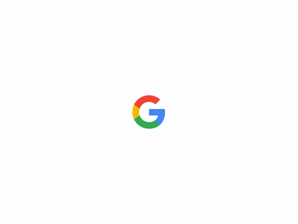

返回


谷
歌
to use the Google search engine to obtain information on the Internet
谷歌是源自美国的跨国科技公司，为Alphabet Inc.的子公司，业务范围涵盖互联网广告、互联网搜索、云计算等领域，开发并提供大量基于互联网的产品与服务，其主要利润来自于AdWords等广告服务。Google由在斯坦福大学攻读理工博士的拉里·佩奇和谢尔盖·布林共同创建，因此两人也被称为“Google Guys”。
信息分析网站Alexa数据显示，Google的主域名google.com是全世界访问量最高的站点，Google搜索在其他国家的多个站点（google.co.in、google.de、google.com.hk等），及旗下的YouTube、Blogger等的访问量都在前一百名之内。
据估计，Google在全世界的数据中心内运营着上百万台的服务器，每天处理数以亿计的搜索请求和约二十四PB用户生成的数据。Google自创立起开始的快速成长同时也带动了一系列的产品研发、并购事项与合作关系，而不仅仅是公司核心的网络搜索业务。Google公司提供丰富的线上软件服务，如云硬盘、Gmail电子邮件，包括Orkut、Google Buzz以及Google+在内的社交网络服务。Google的产品同时也以应用软件的形式进入用户桌面，例如Google Chrome网页浏览器、Picasa图片整理与编辑软件、Google Hangouts即时通讯工具等。另外，Google还进行了移动设备的Android操作系统以及Google Chrome OS操作系统的开发。其安卓系统至今为止仍是移动端的主要操作系统之一。
1998年9月4日，Google以私营公司的形式创立，目的是设计并管理互联网搜索引擎“Google搜索”。2004年8月19日Google公司在纳斯达克上市，后来被称为“三驾马车”的公司两位共同创始人与出任首席执行官的埃里克施密特在此时承诺：共同在Google工作至少二十年，即至2024年止。Google的宗旨是“整合全球信息，供大众使用，使人人受益”（To organize the world's information and make it universally accessible and useful）；而非正式的口号则为“不作恶”（Don't be evil），由工程师阿米特·帕特尔（Amit Patel）所创，并得到了保罗·布赫海特的支持。Google公司的总部称为“Googleplex”，位于美国加州圣克拉拉县的芒廷维尤。2011年4月，佩奇接替施密特担任首席执行官。在2015年8月，Google宣布进行资产重组。重组后，Google划归新成立的Alphabet底下。同时此举把Google旗下的核心搜索和广告业务与Google无人车等新兴业务分开。
© All Rights reserved for Go Believe Bots